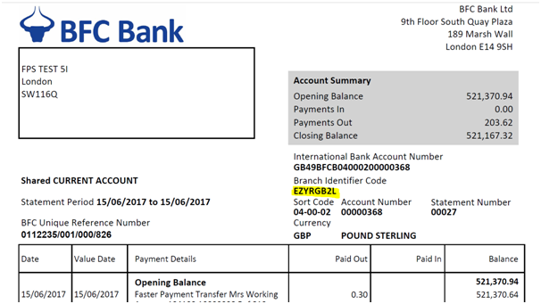
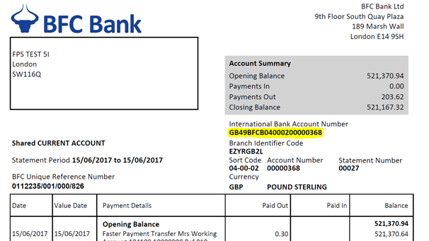

A BIC (or a SWIFT code) is a unique set of characters of either 8 or 11 numbers and letters long. These codes are produced, created and managed by SWIFT (the Society for Worldwide Interbank Financial Telecommunications). This enables easy identification of financial institutions when they carry out international transactions and help process overseas payments efficiently. A BIC or SWIFT code provides the bank, country and branch information where the payment is to be routed.
Below is an example of a BIC for BFC Bank Ltd:
EZYR Bank Code
GB Country Code
2L Location Code
OLY Branch Code
There should not be any spaces between any of the letters or numbers in the BIC.
The BIC can be found on your statement. You can see where it is on a screen shot of a statement below.
If BIC details are shared with a third party, it is like sharing your sort code and bank account details. These should only be shared with the remitter. Under no circumstances should any other confidential information be given out, such as a PIN or memorable information. These could allow an unauthorised person to access the account.
An International Bank Account Number (IBAN) refers to an individual account number. It is written in an internationally recognised format that allows transactions to take place between banks located in different countries. It provides an account holder with the correct information to make or receive International Payments without the risk of rejection or delay and so avoids the payment of unnecessary charges.
It is important to note that an IBAN cannot be used as a replacement for a sort code or account number. It is a unique number containing extra information which helps banks overseas to process payments automatically, quickly and safely.
The IBAN is located on bank statements. The structure is consistent but the actual length, which can be up to 34 characters, will vary depending on which country the account is held in. Below is an example of an IBAN from a fictitious UK account holder at BFC Bank Ltd:
GB21BFCB04000212345678
These numbers identify the account as follows:
GB Country Code Identifies the country the money goes to
21 Check Code Validates the IBAN
BFCB Bank Code Identifies the bank
040002 Sort Code Identifies the bank and the branch
12345678 Account Number Identifies the beneficiary/receiver
If IBAN details are shared with a third party, it is like sharing your sort code and bank account details. These should only be shared with the remitter. Under no circumstances should any other confidential information be given out, such as a PIN or memorable information. These could allow an unauthorised person to access the account.
